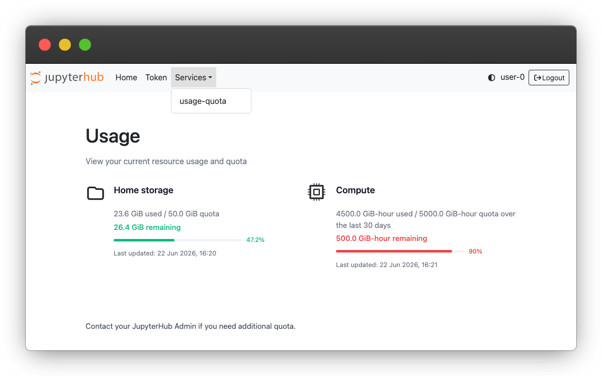
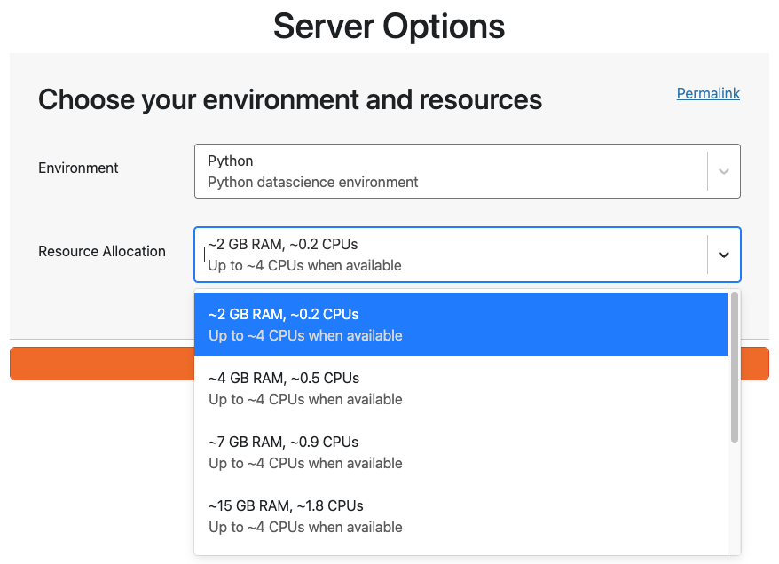
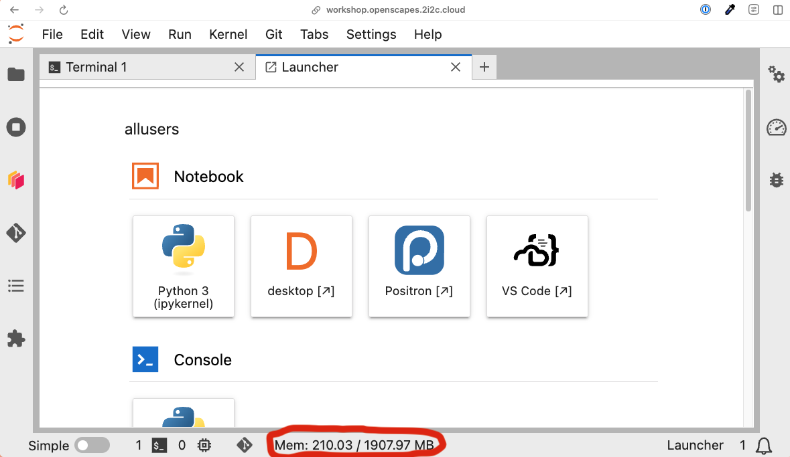

| Server size | Cost per hour | Cost per 8-hour day | Hours before reaching quota |
|---|---|---|---|
| ~2 GB | $0.02 | $0.13 | ~2,800 |
| ~4 GB | $0.03 | $0.25 | ~1,400 |
| ~7 GB | $0.06 | $0.50 | ~690 |
| ~15 GB | $0.13 | $1.01 | ~340 |
| ~29 GB | $0.25 | $2.02 | ~170 |
| ~60 GB | $0.50 | $4.03 | ~84 |
| ~119 GB | $1.01 | $8.06 | ~42 |
Usage Quotas
The NASA-Openscapes and NMFS-Openscapes Hubs are shared resources, and every user’s storage and compute contributes to our cloud costs. To keep the Hubs sustainable for everyone, we use usage quotas developed by 2i2c to cap the amount of home directory storage and compute resources that each user can use.
Home directory storage
Your home directory in the hub has a fixed size limit (see below for specific size quotas). Your home directory is meant for code, notebooks, and small files; where possible data should be streamed for analysis, or stored in an S3 bucket instead. See our Data Storage Policies for tips on managing your storage, and the 2i2c documentation on storage quotas.
Compute
Compute usage is measured in GiB-hours: the amount of memory (RAM) of the server you selected, multiplied by the number of hours your server is running. For example, running a ~4 GB server for 10 hours uses about 36 GiB-hours, while running a ~60 GB server for the same 10 hours uses about 600 GiB-hours.
Usage is counted over a rolling 30-day window, so older usage gradually drops off and frees up quota. If you use up your compute quota, you will not be able to start a new server until enough usage has aged out of the window; the Hub will tell you when you can try again.
Quotas on the Openscapes Hubs
| Hub | Home directory storage | Compute (memory requested) |
|---|---|---|
| NASA-Openscapes | 30 GiB | 5,000 GiB-hours over a rolling 30 days |
| NMFS-Openscapes | 20 GiB | 5,000 GiB-hours over a rolling 30 days |
| NASA-Openscapes Workshop | 10 GiB | 5,000 GiB-hours over a rolling 30 days |
| NMFS-Openscapes Workshop | 10 GiB | 5,000 GiB-hours over a rolling 30 days |
Checking your usage
You can see your current storage and compute usage at any time in the usage dashboard:
Go to the Hub Control Panel:
-
If you are already in JupyterLab, select File > Hub Control Panel.
Open the Services menu in the top navigation bar and select usage-quota.
The dashboard shows how much of each quota you have used and how much remains. The progress bars turn red when you have used more than 90% of a quota. See the 2i2c usage and quota dashboard documentation for more details.

Choosing the right server size
When you start your server, you choose a server size (for example, “~4 GB RAM, ~0.5 CPUs”). We are charged for the size you select, not for what you actually use. For example, a ~15 GB server counts as ~15 GB for every hour it runs, even if your notebook only uses 2 GB of it. Choosing a server that is larger than you need wastes money and uses up your quota faster. See the screenshot below for an example of the options:

As a guide, here is roughly what each server size costs, and how long it can run before using the full 5,000 GiB-hour quota in a 30-day window:
Costs are estimated from the AWS on-demand price (as of October 2026) of the machines the Hubs run on, in proportion to the share of the machine each server size reserves. They do not include storage, data transfer, or the Hub’s shared infrastructure, so actual costs are somewhat higher. Using your full compute quota costs roughly $43, whichever server size you choose.
Tips for choosing the right size:
- Start small. The smallest server is enough for most work, including workshops, writing code, and exploring data. If you run out of memory, choose a larger instance - you will need to shut down your server (File > Hub Control Panel > Stop My Server) and launch a new one by choosing an option with more resources in the dropdown menu.
- Watch your memory use. The memory indicator at the bottom of JupyterLab shows how much memory you are using. If you are consistently using under half of your server’s memory, try choosing a smaller size.

- If your session restarts or crashes unexpectedly while loading or processing data, you have probably run out of memory. Try the next size up.
- Use large servers only when you need them. If you have a short, memory intensive task, start a large server for that task, then shut it down and go back to a smaller one for the rest of your work.
- Shut down your server when you are done. Your server keeps counting against your quota while it is running, even if you are not using it. Use File > Hub Control Panel > Stop My Server rather than just closing your browser tab. Servers are shut down automatically after a period of inactivity, but stopping them yourself is a good idea.
- Work in chunks. Processing data in smaller pieces (for example, by time step or region) or loading data lazily (e.g., with
xarrayanddask) often lets you use a much smaller server.
If your work needs large or long-running compute, please open an issue to talk to the Openscapes Team.